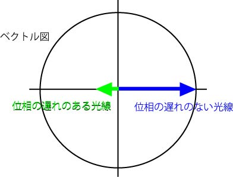
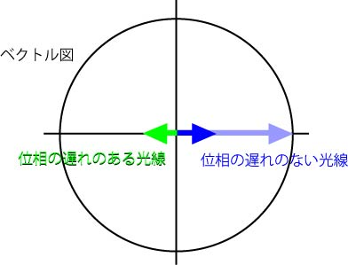
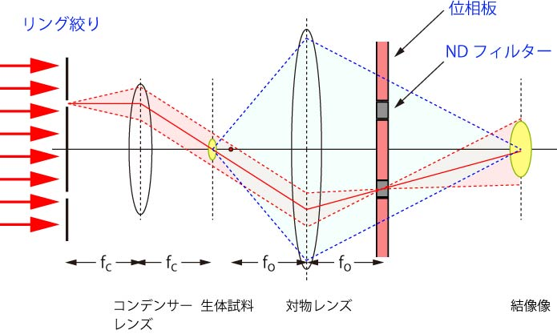

位相差像を作成するにはもう一工夫必要です．
それは．．．下の図を見てください．

１/４位相板を使って，位相の遅れがある光線を９０度位相遅れのない光線に対して，１８０度の位置に変更しました．
この合成波により，振幅（強度）が変化するのですが，二つの光線の大きさがあまりにも違いますね．．．
このままだと，せっかく足しあわせてもほとんど変化がない状態です．
そこで．．．．位相遅れのない光線の強度を下げて上げれば．．．

かなりの効果が見込めますね．
上の図ですと，左向きの緑と右向きの青はほぼ同じ大きさですので，足しあわせると０，つまり真っ暗になりますね．
どうやって，光線の強度を下げるかというと，
NDフィルター
を使えば簡単です．
NDフィルター，とは，Neutral Density，減光フィルターと言い，すべての波長域において均一に減光するフィルターです．
詳しくは，
ケンコー
シグマ光機
などを参考にしてみてください．
回折光の位相を９０度動かす系ならば，

もしくは，直接光の位相を９０度動かす系ならば，
と言う具合にNDフィルターを直接光の集光部分に設置すればいいのですね．
これが位相差顕微鏡の原理となります．
見るとわかるように，位相板は対物レンズの中に組み込まれています．
また，Ph１，２，３，と明記されているように，その大きさも違います．
対物レンズ内の位相板の位置と，リング絞りの位置とは正確に合ってこそ，その効果が発揮されます．
ですので，最初に位置あわせが非常に重要となります．
これで，位相差顕微鏡の説明は終わりますが．．．．自分で説明して．．．ふと疑問に思ったことを次ページで示していきます．